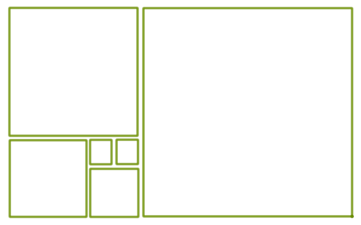

Foundations of Mathematics
 The materials below are adapted from an introductory course on mathematical proof writing by Matt Boelkins. He was kind enough to share the materials with me, and similarly, I am happy to share these materials with you. The textbook is Ted Sundstrom's Mathematical Reasoning: Writing and Proof. I taught this course most recently in Spring 2019 at Duquesne University.Course Materials:
 Syllabus
Syllabus Textbook
Textbook Daily Prep Guidelines
Daily Prep Guidelines Proof Portfolio Guidelines
Proof Portfolio Guidelines LaTeX Template
LaTeX Template Course Outline
Course OutlineCourse Log:
Week 1 |
|---|
|
[01.10.19]
Welcome to the math 250 course page! This website will be a resource for you as we move through the course. I'll be using it as a place to post important course updates and materials, as well as a place to remind you about due dates. Check back often! I'll say more about the proof portfolio as we move through the semester, but sometime before Thursday 01.17, go to overleaf.com and set up an account. We'll take some time in class on 01.17 to work through the basics of LaTeX (pronounced like "Lah-Tech," not like the stuff doctor gloves are made out of). |
Week 2 |
|
[01.15.19] - Daily Prep Please remember to do your daily prep (below) for Thursday January 17th, and be sure to look over the Daily Prep Guidelines (above) to make sure will receive full credit for your daily prep. On Thursday we will finish section 1.2 and begin sections 2.1 and 2.2. At the end of class we will take some time to set up overleaf. You may want to bring your laptop to class for this part. [01.17.19] - Daily PrepHere is Problem Group A. You are responsible for submitting one draft of one problem from group A on Thursday 01.24.19, following the guidelines in the Proof Portfolio Guidelines. Next week we will finish Section 2.2 and move into Chapter 3. 
|
Week 3 |
|
[01.22.19] - Daily Prep Today we finished sections 2.1 and 2.2 and we started to work through section 3.1. On Thursday you will be responsible for submitting one draft of one proof from Problem Group A. If you have questions about this, please come and see me in my office hours or send me an email. Note, this Wednesday my afternoon office hours will be 1-2 and 3-4 (I have a meeting from 2-3). [01.24.19] - Daily PrepToday we finished sections 3.1 and 2.3; we will carry on with 2.4 next time we meet. I've reviewed all of your proof portfolio submissions and left comments (they are written in blue) on your projects. If you have any questions please email me or come and see me. Your next draft is due on Tuesday 01.29.19. |
Week 4 |
|
[01.29.19] - Daily Prep [01.31.19] - Class Canceled Because of the missed class this week, I've asked you to finish the activity sheet for section 3.2 on your own. If you have any questions about that, you can ask them at the beginning of class on Tuesday 2.5.19. Proof portfolio due dates will carry on as usual, they are not affected by the class cancelation. We will have our fist exam on Thursday 2.14.19, it will cover all of the sections we've covered in class (you can check the course outline above to see exactly what we've covered). The questions will come directly from the Sundstrom text. |
Week 5 |
|
[02.05.19] - Daily Prep Today we finished Section 3.3 and on Thursday this week we will do section 3.4. Our first exam will be on Thursday 02.14.19, so you should definitely start working on problems in preparation for the exam. A note on proof portfolios, since there still seems to be some confusion. Each week you will submit two proofs, one on Tuesday and one on Thursday. Each of these proofs will be done on Overleaf with the project title with either "Draft 1" if it's the first draft you're submitting, or "Draft 2" if it's the second draft you're submitting. This means a total of from Problem Group A. I will post Problem Group B later this week or next, but you don't need it yet. There will be no proof due on the day of the exam. [02.07.19] - Daily PrepOur first exam will be on Thursday 02.14, it will cover all of the sections we've covered up through section 3.5. There will be no proof portfolio draft due on the day of the exam. My office hours are on Wednesdays 10-12 and 1-3, many of you are already in the habit of coming to see me, which is great. Come and see me if you have questions or if I can clarify anything in your proof portfolio (I know that sometimes the comments can be a little bit difficult to parse). |
Week 6 |
|
[02.12.19] - Daily Prep Just a reminder that my office hours this week are a bit different since I have a meeting on Wednesday afternoon. So this week my office hours on Wednesday 02.13 are 10-12, 1-2 and 3-4. There will be no proof portfolio due on Thursday this week. [02.14.19] - Exam 1Next week the proof portfolio work will resume as usual, at this point you may want to begin working on problems from Problem Group B. |
Week 7 |
|
[02.19.19] - Daily Prep Your exams are graded and you may come and pick them up during my office hours or at another time on Thursday (although you may want to email me first to make sure I'm here). Unfortunately this week I have a meeting on Wednesday, so I'll have my office hours on Wednesday 10-12 and 1-2 and 3-4 (note the time change). There will be two proof portfolio drafts due this week as usual, and our next exam will be on Thursday March 21st. [02.21.19] - Daily Prep |
Week 8 |
|
[02.26.19] - Daily Prep Wonderful job on your proofs by induction today! Just a reminder that your tenth proof submission is due on Thursday this week, and then there will be no drafts due until after spring break. That means that after this week you should be halfway finished with your proof portfolio. This would be a good time to look through your drafts and see if there are any parts that I can help you perfect during my office hours. And here is something from one of my favorite blogs, Math with Bad Drawings. 
[02.28.19] - Daily Prep Our next exam will be two weeks after break, on Thursday 03.21.19, again the exam will cover all of the sections we've covered up until that day (see the course outline for section numbers) and the proofs will come from the Sundstrom text. There will be no proof portfolio drafts due over break, so your next draft will be submitted on Tuesday 03.12.19. Have a wonderful/restful/restorative/fun break! |
| Spring Break |
Week 9 |
|
[03.12.19] - Daily Prep Today we got more practice doing set proofs using a combination of set algebra and definitions. Here are typed up versions of the proofs we did in class. Our second exam will be on Thursday 03.21 and will cover all of the sections since the first exam, up through Tuesday 03.19, you can find the section numbers on the course outline. 
Today we covered section 5.3, and we will be finishing Chapter 5 on Tuesday next week. You should be preparing for the exam on Thursday 3.21 which will cover all of the sections from 2.18 through 3.19 (see the course outline for section numbers). There will be no proof portfolio draft due on the day of the exam. Here is a link to The Aperiodical, a wonderful mathematical news blog written by a bunch of UK mathematicians. Happy Pi Day! |
Week 10 |
|
[03.19.19] - Daily Prep Because of Exam 2, there will be no proof portfolio due on Thursday this week. My office hours on Wednesday will be 10-12, 1-2, and 2-3. Please stop by if you need help with anything. In the meantime, here is a link a great article about Karen Uhlenbeck, who just won the Abel Prize. [03.21.19] - Exam 2 |
Week 11 |
|
[03.26.19] - Daily Prep Today I handed back the exams and we went through section 6.1 on functions. If you are ready, you may begin doing problems from Problem Group C. My office hours on Wednesday this week will be from 10-12, 1-2, and 3-4, if you need me at other times, please email me to let me know. [03.28.19] - Daily PrepToday we worked through section 6.2, a further study of functions. As I mentioned in class today, I have to apologize that my schedule is about to become a bit chaotic in the next few weeks, but I will always keep you apprised here on the website of my office hours. Next week I will be around on Tuesday 3-5 and Wednesday 10-12 and 3-5. Have a nice weekend! 
|
Week 12 |
|
[04.02.19] - Daily Prep As promised, here is a copy of the sample proof that we talked about in class today. I will be in my office on Wednesday from 10 until noon and again from 3 until 5, but I will be away from campus (at the Oberwolfach Research Institute in Germany) from Thursday 04.04 until Tuesday 04.16. I'll be available by email throughout that time, so please don't hesitate to email me, and I'll do my best to answer your questions remotely. [04.04.19] - Daily PrepI will be away until Tuesday 04.15, in the meantime you should continue to submit your proof portfolio drafts as usual. Dr. Levine will be teaching the class on Tuesday 04.09; she will collect your daily preps. If you have any questions, please email me. |
Week 13 |
|
[04.09.19] - Daily Prep [04.11.19] - Daily Prep I just want to remind everyone that the proof portfolio is due on the last day of class, at the beginning of class. You should be prepared to hand me, printed out and stapled, copies of 10 different proofs. Per the Proof Portfolio Guidelines, the last day to submit proofs for grading is today Thursday 04.11, but since I've been out of town I'll extend that deadline to Tuesday 04.16. At this point you have had 20 draft due, and you should be putting the finishing touches on your final drafts. Beyond this point, you can come and see me about your drafts and I'm happy to go over any questions that remain. Next week my office hours will be on Tuesday 04.16 from 12:30 until 6:00. |
Week 14 |
|
[04.16.19] - Daily Prep [04.18.19] - No Class, Easter Break If you've been keeping up with your drafts and due dates (great job!) you should have finished two drafts of all 10 proofs at this point. I won't be collecting and grading any more drafts through overleaf for the remainder of the semester, although I'll be happy to talk about your proofs with you in my office. In the meantime, if you have questions you can also email me and I will do my best to answer your questions. Next week my office hours will be on Wednesday 04.24 from 10-12, 1-2 and 3-5. |
Week 15 |
|
[04.23.19] - No Class, Monday Schedule This week my office hours will be on Wednesday 04.24 from 10-12, 1-2 and 3-5. Please come and see me if you'd like to go over any of your proof portfolio drafts, or if you have any questions leading up to the final. [04.25.19] - Daily PrepOur last class meeting will be on Tuesday 04.30.19, at which point your proof portfolio will be handed in to me in printed form. Since several of you have asked, I will be in my office on Monday 04.29.19 in the afternoon, from roughly 1-5. Also, if you haven't yet done so, please take a moment to complete your SES forms. These are very important to me as a pre-tenure faculty member and will help ensure that I can continue to teach Math 250 for many years to come. |
Week 16 |
|
[04.30.19] - Daily Prep
Your complete printed out proof portfolio is due to me in class today.
|
|
|
|


|
|
|